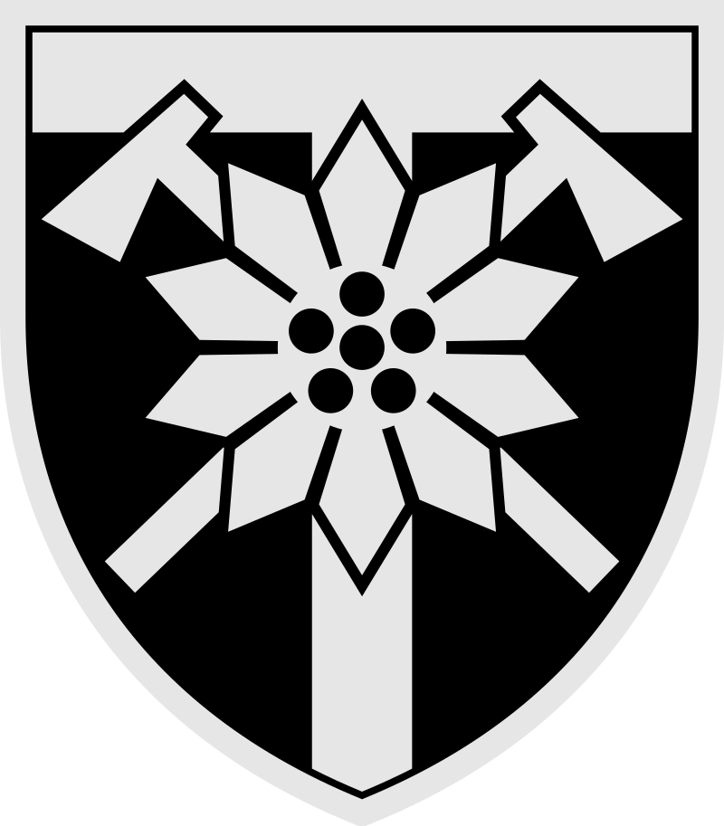
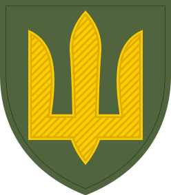
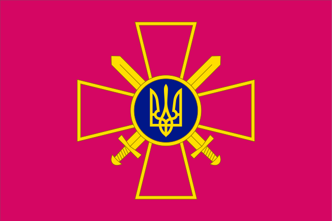

історія після вторгнення:
(Не плутати зі 128-ю окремою бригадою ТРО — з'єднанням Сил територіальної оборони України.)
128-ма окрема гірсько-штурмова Закарпатська бригада (128 ОГШБр, в/ч А1556) — з'єднання гірської піхоти Сухопутних військ України. Бригада перебуває у складі оперативного командування «Захід»; штаб бригади розміщений в Мукачеві, а підрозділи дислокуються на території Закарпатської області.
Бригада була створена після переформування 128-ї механізованої дивізії, що вела свою історію від 128-ї гвардійської мотострілецької дивізії колишньої Радянської армії.
У 1991 році, командир 128-ї гвардійської мотострілецької дивізії генерал Віктор Гречанінов став першим комдивом, який оголосив про підтримку української державності. 19 січня 1992 року особовий склад 128-ї дивізії склав присягу на вірність народу України. Того ж року вона була перетворена з мотострілецької на механізовану. Після реформування армій на корпуси дивізія стала складовою 38-го армійського корпусу Прикарпатського військового округу ЗС України.
1 грудня 1993 року згідно з директивою начальника Головного штабу збройних сил України від 22 квітня 1993 року був розформований 374-й окремий ракетний дивізіон.
128-ма дивізія незмінно посідала провідні місця серед інших з'єднань ЗС України за рівнем бойової, виховної та фізичної підготовки. Зокрема, згідно з наказом Міністра оборони України від 24.10.1996 р. № 307 найкращий рівень фізичної підготовки показав офіцерський склад управління 128-ї механізованої дивізії.
Військовослужбовці дивізії відзначилися самовідданою працею при ліквідації наслідків повеней в Закарпатті у 1994, 1998, 1999 та 2001 рр. 128-ма дивізія налагодила дружні зв'язки та регулярний обмін досвідом з військовослужбовцями сусідніх держав — Словаччини, Угорщини, Румунії, Польщі. На базі з'єднання регулярно відбувалися міжнародні спортивно-військові змагання. У 1998—2000 рр. на базі дивізії сформували український компонент спільного українсько-румунсько-словацько-угорського батальйону «Тиса», створеного для оперативного реагування військовиків сусідніх держав на загрози повеней, а також кваліфікованої, високопрофесійної боротьби з наслідками стихійних лих, що постійно загрожують країнам Карпатського регіону.
27 травня 2000 р. міністр оборони України генерал армії Олександр Кузьмук вручив дивізії Бойовий прапор та зачитав Указ Президента України про присвоєння дивізії почесного найменування «Закарпатська». Відповідний Указ був виданий 10 січня 2000 р. під № 11/2000. Згідно з ним дивізія іменувалась 128-ма гвардійська механізована Закарпатська двічі Червонопрапорна дивізія 38-го армійського корпусу Західного оперативного командування Збройних Сил України.
У 2001 році, група військовослужбовців 128-ї дивізії, які брали участь у ліквідації наслідків стихійного лиха в Закарпатті, отримали нагороди від Президента України. Зокрема, орденом «За мужність» ІІІ ступеня нагороджено комдива генерал-майора Геннадія Воробйова та начальника інженерної служби дивізії підполковника Василя Сапігу, медаллю «За військову службу Україні» нагороджено командира інженерної роти 230-ї артбригади дивізії капітана Олександра Стасюка, медаллю «За бездоганну службу» ІІІ ступеня — командира танкової роти 398-го танкового полку дивізії старшого лейтенанта Олександра Волоха.
Після розформування 38-го армійського корпусу, дивізія увійшла до складу 13-го армійського корпусу. З 1 грудня 2004 р. 128-ма дивізія на підставі Директиви Міністра оборони України від 18.06.2004 р. була переформована на 128-му окрему механізовану бригаду із збереженням усіх почесних найменувань та нагород. Наприкінці 2012 р. була переформована в 34-ту окрему гірсько-піхотну Туркестанско-Закарпатську двічі Червонопрапорну бригаду. Через декілька місяців їй було повернуто попередній номер — 128.
Від початку війни на сході України
військовослужбовці 128-ї бригади зайняли позиції в Луганській області, в районі Лисичанська, Сєвєродонецька та Рубіжного. В грудні 2014 року, 200 військовослужбовців 128-ї гірсько-піхотної бригади за ротацією прибули в м. Мукачево для короткого відпочинку. Громадськість урочисто зустріла своїх героїв-захисників на площі Миру[1]. Військовослужбовці 128-ї бригади брали участь у боях під Дебальцевим в районі м. Артемівська на початку 2015 року. 21 січня на опорному пункті «Льоха» 26 бійців під командуванням старшого лейтенанта Романа Жованика відбили атаку росіян, росіяни втекли, кинувши техніку[2]. Бій на висоті 307,9 метрів на опорному пункті «Валєра» біля села Санжарівка був одним з найбільш кривавих та складних для бійців бригади — 25 січня підрозділи 128-ї бригади зазнали серйозних втрат, було багато поранених, але висоту біля Санжарівки вони утримали. Проте цю висоту довелося залишити — у лютому вони разом з іншими військовослужбовцями бригади та інших збройних формувань, відступили з-під міста. При цьому, за деякими даними, бригада зазнала значних втрат, зокрема 5 бійців бригади потрапили у полон, 10 загинули при виході із оточення.1 березня 2015 року з полону
бойовиків було звільнено чотирьох військових бригади.У червні
2015 року військовослужбовці 128-ї бригади утримували позиції в Луганській області, зокрема біля Кондрашівки24 серпня 2015
року під час Маршу Незалежності на відзначення 24-ї річниці Незалежності України, що пройшов у Києві на Хрещатику, Президент України Петро Порошенко вручив бойовий прапор з відзнакою Президента України — стрічкою до Бойового Прапора «За мужність та відвагу» командиру бригади Герою України полковнику Сергію Шапталі.Від 1 червня
2018 року бригада була перейменована на гірсько-штурмову, а також отримала нову символіку16 липня 2019
року на території військової частини було відкрито монумент у пам'ять військовослужбовців 15-го окремого гірсько-штурмового батальйону 128-ї окремої гірсько-штурмової бригади, які загинули у боях на Сході України. Пам'ятник освятив єпископ ПЦУ Варсонофій (Руднік), який також освятив місце під будівництво храму Юрія Переможця6 травня 2022
року бригада була відзначена почесною відзнакою "За мужність та відвагу".2 вересня 2022
року День жалоби на Закарпатті по 128-й бригаді ЗСУ.У жовтні 2022
року у ході контрнаступу ЗСУ у ворога почалася паніка. Росіяни здаються в полон та тікають з української землі. Воїни 128 ОГШБ звільняють Херсонську область.